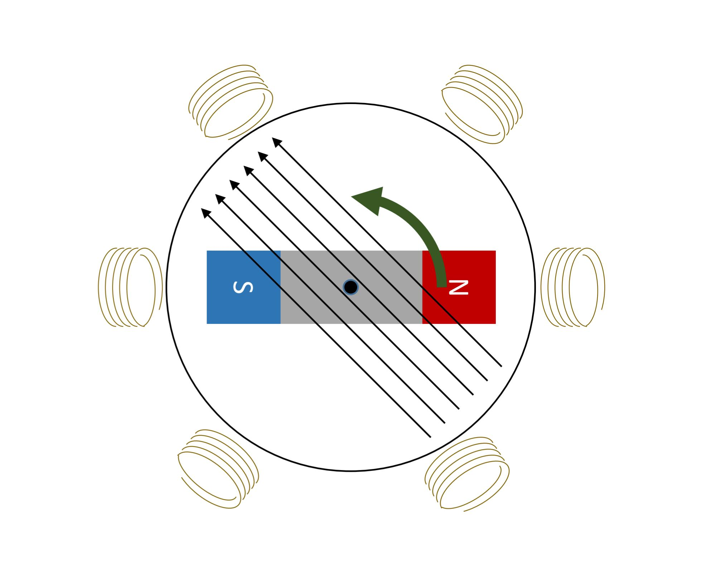
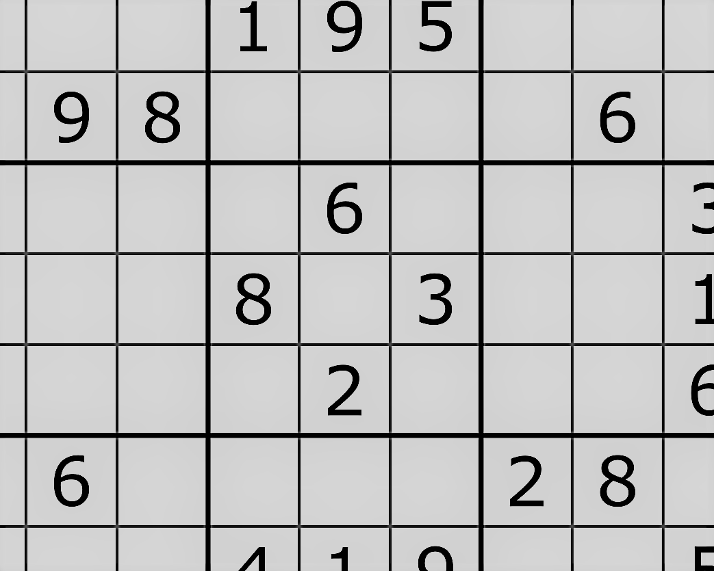
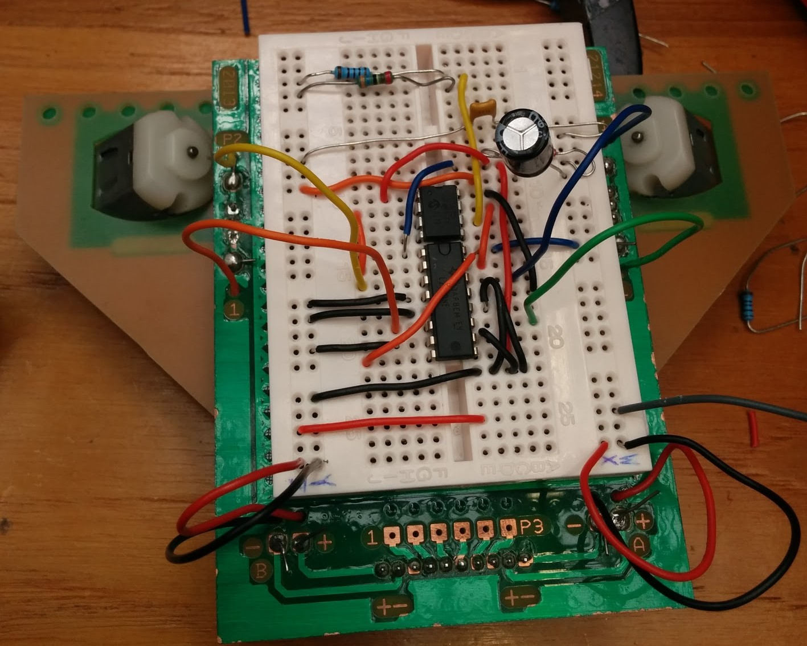
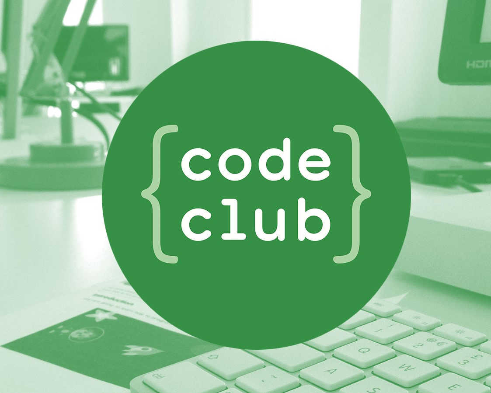

Keyan Sadeghi Namaghi
Student at Imperial College London studying Electrical and Electronic Engineering. Interested particularly in how advancements in technology can provide solutions to improve quality of life.
LinkedIn
Curriculum vitae
Climate Edge
Non-mechanical rain gauge and disdrometer with companion Android application
IoTea
Internet of Things smart tea brewer

Motor Controller
Precision motor control of a brushless motor
ReceiptBook
NFC receipt collator
Real-time digital signal processing
Remove noise from audio in real-time

C++ sudoku solver
Multiple algorithm comparrison for solving sudoku puzzles

EEBug
Line following robot

Code Club
Teaching children Python and Scratch
Work.
About.